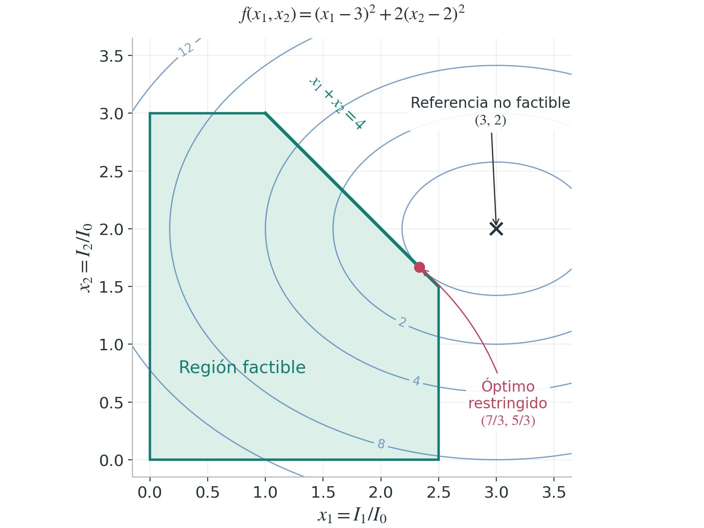
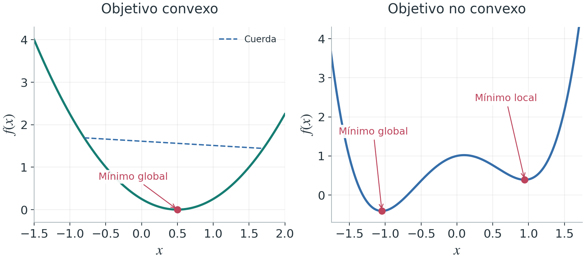
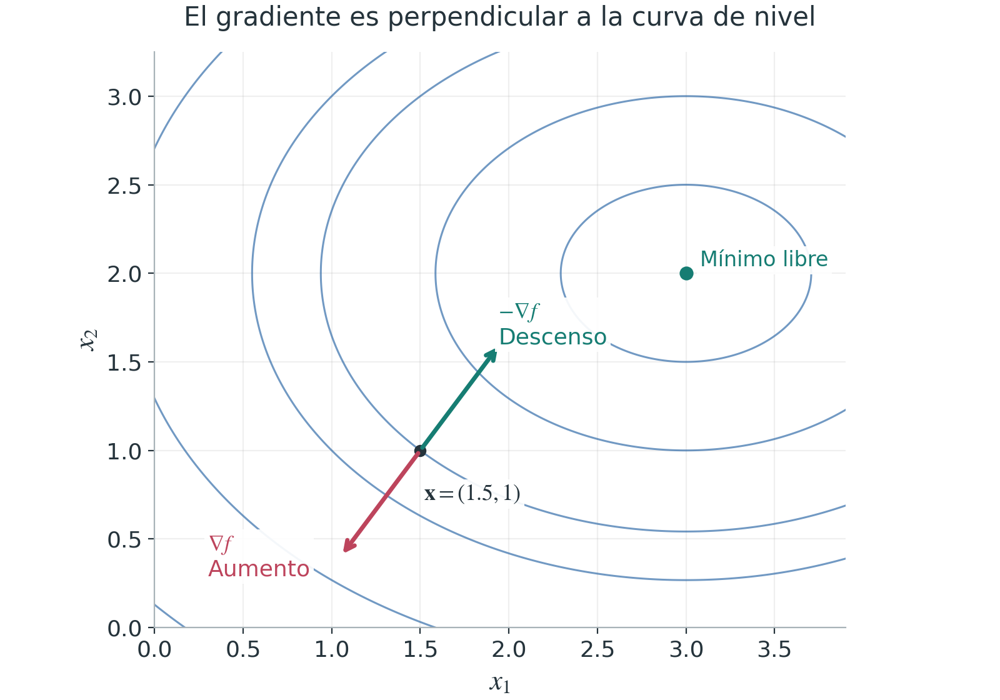
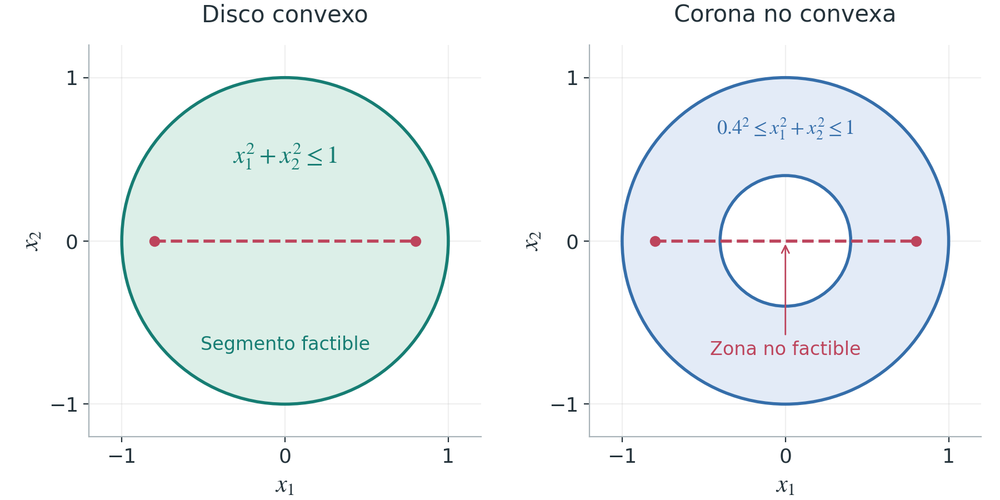

Tutorial
Optimización matemática: objetivos, restricciones y soluciones
Cómo convertir una decisión de ingeniería en un problema matemático, entender su geometría y resolverlo con MATLAB y Python
Optimizar significa elegir la mejor alternativa de acuerdo con un criterio explícito y dentro de un conjunto de posibilidades admisibles. Esa idea aparece al dimensionar un mecanismo, ajustar un modelo a mediciones, distribuir recursos o calcular la acción de un controlador. Este tutorial explica las piezas de un problema de optimización y la relación entre su formulación, su geometría y los métodos que permiten resolverlo. Se distinguen el valor mínimo y la decisión que lo alcanza, se estudian el gradiente y la convexidad, y se interpretan las restricciones lineales, no lineales y sus variables de holgura. Un ejemplo de asignación de corriente a dos actuadores conecta los conceptos con una solución analítica y con programas reproducibles en MATLAB y Python.
Antes del algoritmo está la decisión
Una fuente de alimentación puede resultar insuficiente para satisfacer simultáneamente las demandas de dos motores. Reducir ambas corrientes en la misma cantidad parece razonable, pero quizá uno de los movimientos sea más importante que el otro. Otra opción sería atender por completo al primer motor y entregar al segundo lo que quede. ¿Cuál de esas decisiones es mejor? La pregunta no tiene una respuesta matemática hasta que se define qué significa mejor.
La optimización proporciona un lenguaje para precisar esa comparación. Primero se identifican las cantidades que pueden elegirse; después se construye una medida de desempeño y se establecen las condiciones que ninguna solución puede incumplir. Solo entonces tiene sentido escoger un algoritmo. Un programa puede resolver con gran precisión un problema que no representa lo que realmente se necesitaba.
Las piezas de un problema de optimización
Variables de decisión y función objetivo
Las variables de decisión son las cantidades cuyo valor buscamos. Si hay $n$ variables reales, las agrupamos en un vector columna $\mathbf{x}=[x_1,\ldots,x_n]^{\mathsf T}\in\mathbb{R}^n$. Pueden representar dimensiones de una pieza, ganancias de un controlador, corrientes eléctricas o parámetros desconocidos de un modelo. Los datos ya fijados, como una resistencia medida o un presupuesto disponible, son parámetros del problema, no variables de decisión.
La función objetivo asigna un número a cada decisión. Se escribe $f:\mathbb{R}^n\to\mathbb{R}$ cuando está definida en todo ese espacio, o se especifica un dominio menor cuando la expresión lo requiere. Su valor puede ser un error de seguimiento, una masa, un consumo energético o un costo. Minimizarla significa preferir decisiones con valores más pequeños:
También podemos maximizar un desempeño $J$. Ambos planteamientos se relacionan mediante un cambio de signo:
El signo cambia el valor óptimo, pero las decisiones que maximizan $J$ son las mismas que minimizan $-J$. Si interesa combinar varios criterios, por ejemplo precisión y consumo, se pueden normalizar y ponderar. Los pesos expresan prioridades de diseño; no aparecen automáticamente por invocar un optimizador.
Restricciones y conjunto factible
Las restricciones describen lo permitido. Una desigualdad puede representar un límite de corriente o de temperatura; una igualdad puede expresar un balance de masa, una relación geométrica o una ecuación del modelo. Una formulación general es
El dominio $\mathcal D$ recoge las decisiones para las que el modelo tiene sentido. Una restricción escrita como $\widetilde g_i(\mathbf{x})\leq c_i$ se lleva a la forma anterior definiendo $g_i=\widetilde g_i-c_i$. Por ejemplo, $x_1+x_2\leq4$ equivale a $x_1+x_2-4\leq0$. Las desigualdades entre vectores se interpretan componente a componente.
El conjunto factible reúne los puntos que cumplen todas las condiciones simultáneamente:
Un punto puede tener un costo excelente y ser inútil porque viola una restricción. También puede ocurrir que $\mathcal F$ esté vacío. Exigir a la vez $x_1\geq3$ y $x_1\leq2$ no define un problema difícil de resolver: define un problema sin decisiones admisibles.
El mínimo no es lo mismo que el minimizador
La expresión $\min f$ devuelve el mejor valor de la función. La expresión $\operatorname{arg\,min} f$ identifica los argumentos que lo alcanzan. Para $f(x)=(x-2)^2+3$ se tiene
El número 3 es el costo óptimo y el número 2 es la decisión óptima. En ingeniería suelen necesitarse ambos. Si la solución es única, es habitual escribir $x^\star=2$ y abreviar $x^\star=\operatorname{arg\,min}_x f(x)$, aunque formalmente el operador devuelve un conjunto. Para $f(x)=(x^2-1)^2$, los minimizadores son $\{-1,1\}$ y el valor mínimo es cero.
Tener una cota inferior tampoco garantiza que exista un minimizador. La función $e^x$ se acerca a cero cuando $x\to-\infty$, pero nunca vale cero. Su ínfimo es 0 y no tiene mínimo sobre $\mathbb R$. En cambio, una función continua sobre un conjunto factible no vacío, cerrado y acotado sí alcanza un mínimo. Estas distinciones evitan confundir un problema sin solución alcanzable con un fallo del software.
Un ejemplo de ingeniería que acompañará el tutorial
Consideremos dos actuadores alimentados por una fuente común. Para trabajar con números adimensionales, definimos $x_i=I_i/I_0$, donde $I_0=1\,\mathrm{A}$. Sus referencias son $3\,\mathrm{A}$ y $2\,\mathrm{A}$, pero la fuente solo puede entregar $4\,\mathrm{A}$ en total. El primer canal admite hasta $2.5\,\mathrm{A}$ y el segundo hasta $3\,\mathrm{A}$. En este ejemplo no se permite corriente negativa.
Queremos aproximarnos a las referencias y damos el doble de peso al error cuadrático del segundo actuador. El problema queda definido por
La función mide desviaciones respecto de las referencias, no potencia eléctrica. El factor 2 es una prioridad elegida para el ejemplo. Además, se trata de una asignación estática de corrientes: se supone que los reguladores internos pueden seguir esas consignas. No estamos modelando todavía la dinámica eléctrica ni mecánica de los actuadores.

Las curvas de nivel reúnen puntos con el mismo valor de $f$. En este caso son elipses centradas en $(3,2)$. La región sombreada representa decisiones físicamente admisibles bajo las hipótesis planteadas. Cambiar el objetivo modifica las elipses; cambiar las restricciones modifica el polígono. Son dos partes diferentes del modelo.
Convexidad de la función objetivo
Un mínimo local es mejor que los puntos factibles suficientemente cercanos. Un mínimo global es mejor que todos los puntos factibles. En una función con varios valles, un algoritmo puede llegar al fondo de uno sin encontrar el más profundo.
La convexidad permite una garantía especialmente útil. Una función $f$ es convexa sobre un dominio convexo si, para cualesquiera $\mathbf u,\mathbf v$ de ese dominio y $0\leq\theta\leq1$, cumple
En una gráfica de una variable, la cuerda entre dos puntos de la curva nunca queda por debajo de ella. No es necesario que la función parezca una parábola ni que tenga derivadas en todas partes; $|x|$ también es convexa.

Si el objetivo y el conjunto factible son convexos, cualquier mínimo local es global. Se puede entender por contradicción: si existiera un punto factible mejor, los puntos del segmento que lo une con el supuesto mínimo local seguirían siendo factibles y, por convexidad, mejorarían el costo incluso arbitrariamente cerca de ese mínimo.
Si el objetivo es estrictamente convexo, el minimizador es único cuando existe. La convexidad por sí sola no garantiza unicidad ni existencia. Para funciones dos veces diferenciables en un dominio abierto convexo, puede examinarse la matriz hessiana $\nabla^2f$; que sea semidefinida positiva en todo el dominio equivale a convexidad. En nuestro ejemplo,
Sus dos eigenvalores son positivos, por lo que el objetivo es estrictamente convexo. Aunque contiene cuadrados y es una función no lineal, sigue siendo convexa. No lineal y no convexo no son sinónimos.
El gradiente indica cómo cambia el costo
Para una función diferenciable de varias variables, el gradiente agrupa las derivadas parciales en un vector:
Su utilidad se aprecia en la aproximación local
Si $\nabla f^{\mathsf T}\mathbf d<0$, un desplazamiento suficientemente pequeño en la dirección $\mathbf d$ reduce el costo. Con la norma euclidiana, $-\nabla f$ apunta en la dirección de descenso más pronunciado. Esto motiva la iteración de descenso por gradiente
El tamaño de paso $\alpha_k$ importa. Un paso demasiado grande puede aumentar el costo u originar oscilaciones. En problemas restringidos, además, la nueva decisión puede salir del conjunto permitido; el descenso libre no resuelve automáticamente esa dificultad.

En el reparto de corriente, $\nabla f=[2(x_1-3),\,4(x_2-2)]^{\mathsf T}$. Al comenzar en $(0,0)$ y usar $\alpha=0.2$, un paso libre produce $(1.2,1.6)$. Repetir el proceso sin imponer restricciones lo llevaría hacia $(3,2)$, que no es admisible.
La convexidad también depende de las restricciones
Un conjunto $\mathcal F$ es convexo cuando contiene el segmento completo entre cualquier pareja de sus puntos:
Un disco es convexo; una corona circular no lo es, porque un segmento entre puntos de lados opuestos atraviesa el hueco. La diferencia no depende de que la frontera sea curva. Importa si las combinaciones intermedias siguen siendo admisibles.

El disco unitario se describe mediante $x_1^2+x_2^2-1\leq0$, una desigualdad no lineal que sí define un conjunto convexo. Para obtener una corona añadimos $r^2-x_1^2-x_2^2\leq0$, con $0<r<1$. En planificación de movimiento, excluir un obstáculo introduce precisamente regiones prohibidas que pueden destruir la convexidad del espacio de posiciones.
Una forma estándar de garantizar un problema convexo consiste en minimizar una función convexa, imponer desigualdades $g_i\leq0$ con funciones $g_i$ convexas y usar igualdades afines, como $E\mathbf x=\mathbf d$. Las igualdades no lineales no garantizan un conjunto convexo. Esto es un criterio suficiente de formulación; algunas expresiones no estándar pueden describir, aun así, conjuntos convexos.
Desigualdades lineales, matrices y politopos
Una desigualdad $\mathbf a^{\mathsf T}\mathbf x\leq b$ define un semiespacio. En dos dimensiones su frontera es una recta; en tres, un plano. Varias desigualdades se satisfacen simultáneamente en la intersección de sus semiespacios. Agrupándolas por filas se obtiene
En el ejemplo de los actuadores, las cinco desigualdades pueden escribirse como
Las dos últimas filas expresan $x_1\geq0$ y $x_2\geq0$. La región resultante es el polígono con vértices $(0,0)$, $(2.5,0)$, $(2.5,1.5)$, $(1,3)$ y $(0,3)$. En dimensiones mayores se habla de poliedros; un poliedro acotado es un politopo. No toda intersección de semiespacios está acotada, de modo que no siempre corresponde llamarla politopo.
Las cotas $\boldsymbol\ell\leq\mathbf x\leq\mathbf u$ definen una caja y pueden mantenerse separadas de $A\mathbf x\leq\mathbf b$ al utilizar software. Esto evita escribir filas adicionales que algunos solucionadores ya gestionan de forma específica.
Holguras y restricciones activas
La holgura de una desigualdad mide cuánto falta para alcanzar su límite en las unidades de esa desigualdad. Para el sistema lineal definimos
Se introduce una holgura por cada desigualdad, así que $\mathbf s\in\mathbb R^m$, mientras que $\mathbf x\in\mathbb R^n$. Una componente $s_i=0$ identifica una restricción activa; si $s_i>0$, queda margen disponible. Una holgura negativa indica una violación. La transformación no implica que $\mathbf x$ deba ser no negativo en todos los problemas; eso solo se impone cuando forma parte del modelo.
En $(1,1)$, las holguras de nuestras cinco filas son $[2,1.5,2,1,1]^{\mathsf T}$. La primera indica que aún quedan $2\,\mathrm{A}$ de capacidad total. Una holgura no es, en general, la distancia euclidiana a la frontera: para una fila no nula, esa distancia es $s_i/\|\mathbf a_i\|_2$. Multiplicar una desigualdad por 100 multiplica su holgura por 100, pero no mueve la frontera.
Programación lineal y cuadrática
En este contexto, programación significa planificación matemática; no se refiere al lenguaje con el que se escribe el código. Dos familias especialmente importantes se reconocen por la forma de su objetivo y sus restricciones.
| Familia | Objetivo | Restricciones | Convexidad |
|---|---|---|---|
| Programación lineal (LP) | $\mathbf c^{\mathsf T}\mathbf x$ | Igualdades y desigualdades afines. | Problema convexo. |
| Programación cuadrática (QP) | $\frac12\mathbf x^{\mathsf T}H\mathbf x+\mathbf c^{\mathsf T}\mathbf x$ | Igualdades y desigualdades afines. | Convexo si $H$ es simétrica semidefinida positiva. |
En un politopo no vacío, una función lineal alcanza algún óptimo en un vértice. Eso no significa que todas las soluciones óptimas sean vértices: si el objetivo es constante sobre una arista óptima, todos sus puntos también son soluciones. Por ejemplo, maximizar $2x_1+x_2$ sobre nuestro polígono conduce al vértice $(2.5,1.5)$ y al valor $6.5$.
Un objetivo cuadrático puede alcanzar su mínimo en el interior, en una arista o en un vértice. Para nuestro costo de seguimiento, al desarrollar los cuadrados resulta
La constante 17 no cambia el minimizador, pero sí el valor del objetivo. Si se omite al llamar a un solucionador, habrá que recuperarla al informar el costo de seguimiento. El factor $\tfrac12$ es una convención que simplifica el gradiente de la forma cuadrática a $H\mathbf x+\mathbf c$.
El ajuste por mínimos cuadrados también pertenece a esta familia. Si se minimiza $\tfrac12\|B\boldsymbol\theta-\mathbf y\|_2^2$, entonces $H=B^{\mathsf T}B$ es semidefinida positiva, porque $\mathbf v^{\mathsf T}H\mathbf v=\|B\mathbf v\|_2^2\geq0$. Es definida positiva cuando las columnas de $B$ son linealmente independientes. No debe suponerse unicidad del ajuste cuando falta esa independencia.
Resolución analítica del reparto de corriente
El mínimo libre estaría en $(3,2)$, pero viola la capacidad total y el límite del primer canal. Para buscar una solución sobre la frontera de corriente total usamos $x_2=4-x_1$. El objetivo restringido a esa recta queda
Sobre esta frontera, las otras cotas permiten $1\leq x_1\leq2.5$. Al imponer $\mathrm d\varphi/\mathrm dx_1=6x_1-14=0$ obtenemos un candidato dentro de ese intervalo:
La corriente asignada al segundo actuador queda a $1/3\,\mathrm A$ de su referencia; la del primero, a $2/3\,\mathrm A$. La diferencia se explica por la mayor penalización del segundo error. No basta con repartir la capacidad por mitades ni con recortar cada referencia de manera independiente.
Cómo certificar que no existe un punto mejor
Buscar sobre una frontera solo produce un candidato. Para justificar que es el óptimo del problema completo comprobamos primero todas las restricciones. Sus holguras son
Solo está activo el límite de corriente total. En ese punto, el gradiente no es cero:
Para cualquier otro punto factible $\mathbf y$, la convexidad diferenciable da la siguiente cota:
La última desigualdad usa precisamente $y_1+y_2\leq4$. Por tanto, ningún punto permitido mejora el candidato. La convexidad estricta garantiza además que es único. Esta relación entre el gradiente y la normal a la restricción es un caso de las condiciones de Karush-Kuhn-Tucker; aquí el multiplicador asociado al límite total es $4/3$ y los de las otras desigualdades son cero.
Implementación en MATLAB
El siguiente programa requiere MATLAB con Optimization Toolbox. Usa quadprog y mantiene las cotas separadas de la restricción de suma. Después verifica la factibilidad y calcula el costo con la expresión original. El archivo completo es optim_actuadores.m.
La salida debe dar corrientes próximas a $2.333333\,\mathrm A$ y $1.666667\,\mathrm A$, con costo $0.666667$. El valor devuelto directamente en valor_qp es aproximadamente $-16.333333$, porque la función que recibe quadprog no contiene la constante 17. Eso no es un error del algoritmo.
Implementación en Python
La misma formulación puede resolverse con NumPy, SciPy y Matplotlib. Aquí empleamos minimize con SLSQP, un método de optimización restringida de propósito más general. Se proporciona el gradiente analítico para evitar estimarlo por diferencias finitas. El programa está disponible en optim_actuadores.py.
El indicador de éxito del solucionador debe acompañarse de comprobaciones del modelo. En este ejemplo conocemos la respuesta exacta y podemos compararla; en uno grande se revisan los residuos de las restricciones, las condiciones de optimalidad y la sensibilidad a las tolerancias. Un mensaje de convergencia de un método local no certifica por sí solo un mínimo global en un problema no convexo.
Qué hace difícil un problema real
La cantidad de variables importa, pero no es el único factor. Un gran problema cuadrático con matrices dispersas puede tener más estructura aprovechable que una pequeña función irregular evaluada mediante un experimento lento. Conviene identificar las dificultades antes de decidir qué herramienta utilizar.
- No convexidad. Puede haber varios mínimos locales, puntos de silla o regiones factibles desconectadas. Probar varios puntos iniciales aporta evidencia, pero no garantiza haber encontrado el óptimo global.
- Derivadas ausentes o poco fiables. Una función puede no ser diferenciable, o estar disponible solo como una simulación cerrada. Los métodos sin derivadas son una opción, aunque el costo depende del problema y del presupuesto de evaluaciones.
- Evaluaciones costosas. Si calcular un solo costo exige simular un robot durante minutos, conviene aprovechar derivadas, paralelismo o modelos sustitutos cuando sean apropiados. El número de evaluaciones puede importar más que el número de iteraciones.
- Ruido e incertidumbre. Un costo obtenido de mediciones cambia entre repeticiones. Perseguir diferencias menores que ese ruido puede producir una aparente mejora sin relevancia física.
- Escalas muy diferentes. Mezclar milímetros, amperes y ganancias de magnitudes dispares puede perjudicar el comportamiento numérico. Escalar las variables y definir tolerancias coherentes ayuda, sin sustituir una formulación correcta.
- Variables enteras. Decidir cuántos sensores instalar o qué actuadores encender introduce decisiones discretas. Redondear una solución continua puede violar restricciones y no sustituye un método de optimización entera.
Cuando la decisión es una trayectoria
En control, la decisión puede ser una secuencia de entradas $\mathbf u_0,\ldots,\mathbf u_{N-1}$ en vez de un único ajuste estático. Una representación discreta típica es
donde $\mathbf z_k$ es el estado, $F$ es el modelo dinámico, $\ell$ mide el costo de cada etapa y $\phi$ el costo terminal. La dinámica aparece como una restricción de igualdad. Si el modelo es lineal, los costos son cuadráticos convexos y las restricciones son afines, se obtiene un QP, estructura habitual en control predictivo. Con dinámica no lineal, la geometría y las garantías pueden cambiar.
Un procedimiento de trabajo verificable
- Definir la decisión. Especificar qué se puede cambiar, con qué unidades y dentro de qué dominio.
- Escribir el criterio. Explicar qué mide el objetivo y por qué sus pesos reflejan la aplicación.
- Separar requisitos de preferencias. Colocar límites físicos y balances en las restricciones, y comprobar que exista alguna decisión factible.
- Reconocer la estructura. Distinguir continuidad, convexidad, derivadas disponibles y presencia de variables enteras.
- Resolver y comprobar. Revisar la terminación del algoritmo, los residuos, el costo calculado con el modelo original y la plausibilidad física.
- Estudiar la sensibilidad. Modificar ligeramente referencias, capacidades o pesos para comprobar si la decisión cambia de forma razonable.
Como ejercicio, sustituye el peso 2 por 1 en el costo de los actuadores. La solución pasa a $(2.5,1.5)$ y quedan activas tanto la capacidad total como la cota superior del primer canal. Después vuelve al peso 2 y aumenta la capacidad total de 4 a 6. La solución es $(2.5,2)$: sobra capacidad en la fuente, pero el primer actuador continúa limitado por su propio canal. No todas las restricciones deben estar activas en el óptimo.
Optimizar es modelar una elección
La función objetivo expresa lo deseable y el conjunto factible delimita lo posible. El gradiente describe cómo cambia el costo; la convexidad permite relacionar mejoras locales con garantías globales. Las matrices de restricciones y las variables de holgura traducen esas ideas a representaciones que los algoritmos pueden aprovechar.
El ejemplo de los actuadores muestra por qué esos elementos deben entenderse juntos. La referencia ideal no era factible, el óptimo no tenía gradiente nulo y el reparto correcto dependía de los pesos del objetivo. El resultado útil no fue solo un número, sino una decisión acompañada de una explicación y de comprobaciones que permiten confiar en ella.
Referencias
- Brunton, S. L. (2026). Optimization: A bootcamp for machine learning, inverse problems, and control. Cambridge University Press.
- Boyd, S., & Vandenberghe, L. (2004). Convex optimization. Cambridge University Press.
- The MathWorks, Inc. (2026). quadprog: Quadratic programming. Optimization Toolbox Documentation.
- SciPy Community. (2008). minimize(method='SLSQP'). SciPy Manual.